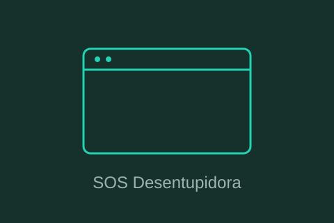
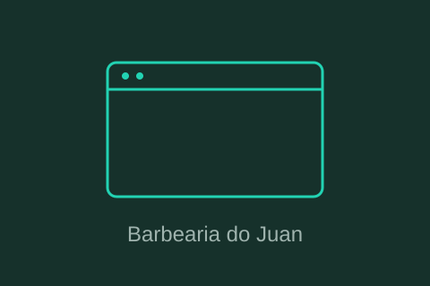
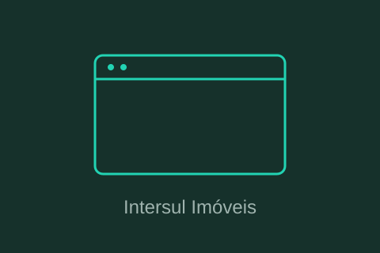
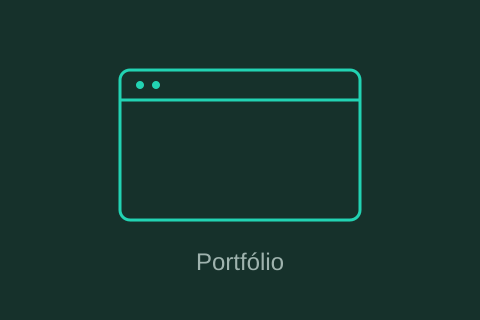
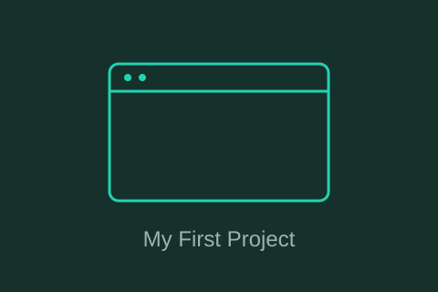

SOS Desentupidora
Site institucional de desentupimento 24h em São Paulo, com foco em conversão: chamada direta pelo WhatsApp e artigos para SEO.
Ver projeto →Olá, eu sou
Desenvolvedor TOTVS Fluig | Automação de Processos & BPM
Atuo com sustentação de sistemas, integrações e automação de rotinas usando TOTVS Fluig e Power Automate. Sou apaixonado por frontend e UI/UX: gosto de interfaces claras, bonitas e fáceis de usar.
São Paulo, SP, Interlagos
Sobre mim
Sou um profissional com experiência em TOTVS Fluig, focado em sustentação, integrações, automação e melhoria contínua de processos. Sou apaixonado por frontend e UI/UX, e levo esse cuidado com a experiência de quem usa o sistema para o trabalho com Fluig, unindo conhecimento da plataforma, lógica de programação e automação de rotinas.
No dia a dia, isso significa investigar incidentes em workflows, analisar logs e payloads, ajustar formulários e datasets, e documentar processos para que times técnicos e de negócio falem a mesma língua.
Trajetória
Locatelli Group
P2S Tecnologia
Intersul Imóveis
Stack & Conhecimentos
Reconhecimento
Trabalhos
Sites e projetos que desenvolvi. Use os filtros abaixo para navegar por tecnologia.

Site institucional de desentupimento 24h em São Paulo, com foco em conversão: chamada direta pelo WhatsApp e artigos para SEO.
Ver projeto →
Site com agendamento online de horários, escolha de serviços e painel administrativo para a barbearia.
Ver projeto →
Site imobiliário para compra, venda e locação na Zona Sul de São Paulo, com catálogo de imóveis e identidade visual própria.
Ver projeto →
Este próprio site: HTML, CSS e JavaScript puro, tema claro/escuro, filtro de projetos e layout responsivo.
Ver projeto →
Meu primeiro projeto web, publicado no GitHub Pages: onde comecei a praticar HTML, CSS e JavaScript.
Ver projeto →Vamos conversar
Aberto a novas oportunidades, projetos e colaborações envolvendo TOTVS Fluig, automação de processos e desenvolvimento web.